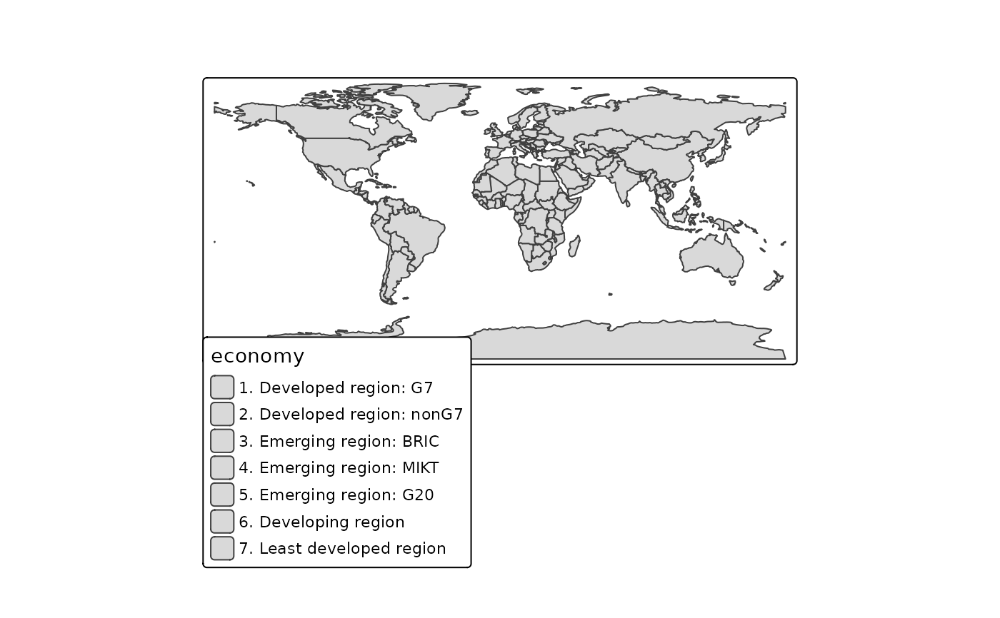

Specify fill patterns for the map variable pattern (see tm_polygons()), either as
constant value or as values of a scale, e.g. tm_scale_categorical().
The arguments are vectorized, so one call can specify several patterns.
A plain character vector of pattern types and shortcuts can also be used instead,
as well as a list of tm_patterns() calls.
Arguments
- type
Pattern type or shortcut. See details.
- angle
Angle of the motif in degrees, counter-clockwise from horizontal. For
"hatch", 0 means horizontal lines and 45 lines from lower left to upper right.- random
Randomness of the placement of dots, circles, or crosses, between 0 (regular grid) and 1 (maximal random displacement within the grid cell). Elements do not clump, since each grid cell contains one element.
- length
Length of dashes, bricks, or herringbone blocks, relative to the spacing.
- amplitude
Amplitude of waves and zigzag lines, relative to the spacing.
Details
Pattern types:
| Type | Parameters |
"none" | – |
"hatch" | angle (default 45) |
"crosshatch" | angle (default 0) |
"dots" | random (default 0) |
"dashes" | angle (default 0), length (default 0.5) |
"bricks" | angle (default 0), length (default 2) |
"herringbone" | angle (default 0), length (default 2) |
"hexagons" | angle (default 0) |
"waves" | angle (default 0), amplitude (default 0.25) |
"zigzag" | angle (default 0), amplitude (default 0.25) |
"circles" | random (default 0) |
"crosses" | random (default 0) |
"noise" | – |
Shortcuts: "hatch_up" (same as "hatch"), "hatch_down" (angle 135),
"hatch_horizontal" (angle 0), "hatch_vertical" (angle 90),
"crosshatch_diagonal" (crosshatch with angle 45), and "stipple" (dots with random = 0.7).
The spacing between the pattern elements is determined by the map variable
pattern_density, the line width or dot size by pattern_size, and the color by pattern_col.
The parameters length and amplitude are relative to that spacing, so the whole
motif is scaled with the density.
Examples
tm_patterns("hatch", angle = c(0, 45, 90, 135))
#> [1] "hatch(angle=0)" "hatch(angle=45)" "hatch(angle=90)" "hatch(angle=135)"
tm_patterns(c("dots", "stipple", "bricks"))
#> [1] "dots(random=0)" "dots(random=0.7)"
#> [3] "bricks(angle=0,length=2)"
# as values of a scale
tm_shape(World) +
tm_polygons(pattern = "economy",
pattern.scale = tm_scale_categorical(values = tm_patterns(c("hatch", "dots", "bricks"))))
#> Warning: [pattern] the number of patterns (3) is smaller than the number of classes (7),
#> so patterns are recycled
